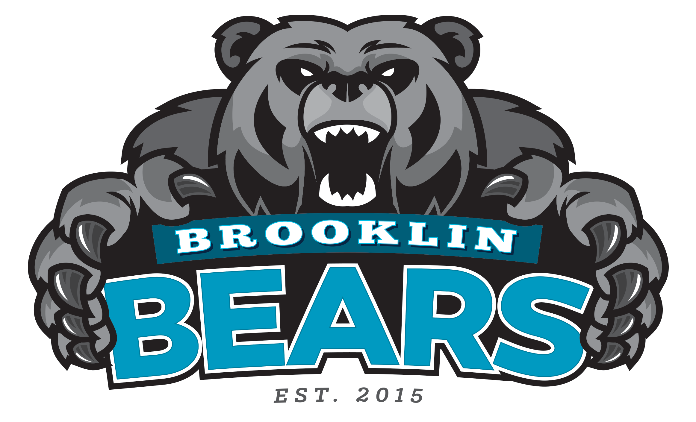

Biography
Ethan is a 4th-year student at McMaster University, specializing in Automation Engineering Technology. Originally from Brooklin, Ontario, Ethan is passionate about innovative automation solutions, process optimization, and emerging technologies in the field. With a strong technical background and hands-on experience, they are eager to contribute to the advancement of automation in industries ranging from manufacturing to smart systems.
Education

Bachelor of Technology, Automation Engineering Technology (Current)
McMaster University, Hamilton ON
__________________________________________________

Brooklin High School (September 2016 - June 2020)
Brooklin, ON
Experience
Veolia Water Technologies & Solutions - E&IC and Project Engineering Intern
Oakville, ON. (May 2023 - August 2024)
- Reviewed engineering drawings, P&IDs, and electrical schematics to ensure compliance with project requirements.
- Coordinated with cross-functional teams to support project execution, documentation, and inspections.
- Served as the Lead Electrical Engineer on an expansion project for an existing system, overseeing the design, implementation, and
testing of electrical and instrumentation systems.
__________________________________________________

Tim Hortons - Team Member / Trainer
Whitby, ON. (August 2017 - August 2021)
- Trusted by managers and supervisors to conduct difficult tasks independently, and in groups, as well as run store with little assistance.
- Location recognized as “Second most efficient in Canada” in 2019 (Platinum Award).
__________________________________________________
Deer Creek Golf and Banquet - Course Maintenance
Ajax, ON. (May 2022 - September 2022)
- Responsibility of maintaining courses pristine conditions by operating various machinery including mowers, tractors, aerators, as well as various handheld tools
- Entrusted out of over a dozen co-workers with the most difficult project over the summer, aerating all greens, tees, and approaches on a weekly basis.
__________________________________________________
Canadian Red Cross - Volunteer Lifesaving Instructor
Brooklin, ON. (June 2018 - August 2018)
- Throughout the summer of 2018, I volunteered as a lifesaving instructor for the Canadian Red Cross organization for a private backyard swimming instructor, where I assisted many children in increasing their swimming ability.